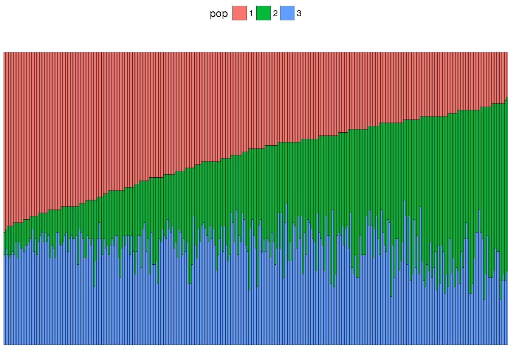

Last updated: 2017-03-12
Code version: e75cac0
Libraries used in this document:
sshhh("tidyr")
sshhh("dplyr")
sshhh("magrittr")
sshhh("ggplot2")
sshhh("cowplot")
sshhh("tibble")
sshhh("gtools")Reading in the data:
dat <- read.table("../data/thrush-data.str", header = F)
colnames(dat) <- c("iid", "origin", paste(rep("locus_"), 1:(ncol(dat) - 2),
sep = ""))What does our data look like?
knitr::kable(head(dat), caption = "Thrush data")| iid | origin | locus_1 | locus_2 | locus_3 | locus_4 | locus_5 | locus_6 | locus_7 |
|---|---|---|---|---|---|---|---|---|
| 1 | 2 | 1 | 1 | 6 | 1 | 2 | 2 | 5 |
| 1 | 2 | 4 | 2 | 6 | 1 | 2 | 4 | 5 |
| 10 | 2 | 4 | 2 | 1 | 1 | 2 | 2 | 5 |
| 10 | 2 | 4 | 3 | 6 | 1 | 2 | 10 | 8 |
| 1219 | 2 | 4 | 3 | 6 | 1 | 3 | 2 | 1 |
| 1219 | 2 | 13 | 5 | 6 | 2 | -9 | 2 | 4 |
Here we can implement the necessary functions to update the gibbs sampler:
# Random useful functions
# normalize a vector
normalize <- function(x) {
return(x/sum(x))
}
# special log function to avoid log(0)
mylog <- function(x) {
return(ifelse(x == 0, 0, log(x)))
}# Update functions
#' @param arg.x input data
#' @param arg.p p_klj list of length k of j by l matrices of allele frequencies per locus per population
#' @param arg.k number of populations
#' @return vector of population assignments for each individual i
sample_z1 <- function(arg.x, arg.p, arg.k) {
x <- arg.x
p <- arg.p
k <- arg.k
# we only want to genotype data
x <- x[, 3:ncol(x)]
# how many loci do we have?
num_loci <- ncol(x)
# empty z vector of all individuals
z <- numeric(nrow(x))
# for each individual
for (xi in 1:length(z)) {
# for each population
weights <- numeric(k)
for (ki in 1:k) {
# for each loci
freqs <- numeric(num_loci)
for (li in 1:ncol(x)) {
# for allele j at individual xi and loci li
j <- x[xi, li]
# ignore missing data
if (j > 0) {
# allele 14 does not exist
if (j > 13) {
freqs[li] <- p[[ki]][j - 1, li]
} else {
freqs[li] <- p[[ki]][j, li]
}
}
}
# log them to avoid working with small numbers
weights[ki] <- sum(mylog(freqs))
}
# normalize the exponentiated weights
theta <- normalize(exp(weights))
# draw a population sample
z[xi] <- sample(x = 1:k, size = 1, replace = T, prob = theta)
}
return(z)
}
#' @param arg.x input data
#' @param arg.z vector of length nrow(arg.x)
#' @param arg.k number of populations
#' @return a k-length list of j alleles by l loci matrices
sample_p1 <- function(arg.x, arg.z, arg.k) {
# don't get confused by arguments
x <- arg.x
z <- arg.z
k <- arg.k
# we only want to genotype data
x <- x[, 3:ncol(x)]
# what alleles exist in our data set?
alleles <- as.integer(names(table(unlist(x))))
# first allele will be -9 which in this data set is missing data
alleles <- alleles[-1]
# convert to tibble for easy joining
allele_counts <- tibble::tibble(allele = alleles)
# p is a k length list of matrices
p <- vector("list", k)
# how many loci in our data?
num_loci <- ncol(x)
# for each population k_i
for (ki in 1:k) {
# what individuals are in population k_i? take only columns 3 to the end
ink <- x[z == ki, ]
# initialize matrix for k_i
p[[ki]] <- matrix(0, nrow = nrow(allele_counts), ncol = num_loci)
# for each locus l_i
for (li in 1:num_loci) {
# count the number of each allele
ti <- tibble::as_tibble(table(ink[li]))
# merge to create count of all alleles
colnames(ti) <- c("allele", "count")
ti$allele <- as.integer(ti$allele)
loci_counts <- dplyr::full_join(allele_counts, ti, by = "allele")
loci_counts <- dplyr::filter(loci_counts, allele != -9)
loci_counts$count <- ifelse(is.na(loci_counts$count), 0, loci_counts$count)
# sample p_lkj as Dirichlet
p[[ki]][, li] <- gtools::rdirichlet(n = 1, alpha = 1 + loci_counts$count)[1,
]
}
}
return(p)
}Next we’ll write the gibbs sampler itself:
# Gibbs sampler function
gibbs1 <- function(arg.niter = 1000, arg.x, arg.k) {
niter <- arg.niter
x <- arg.x
k <- arg.k
# we don't care about the first two columns
x <- x[, 3:ncol(x)]
# how many alleles in our data set?
alleles <- as.integer(names(table(unlist(x))))
num_alleles <- length(alleles)
# how many loci?
num_loci <- ncol(x)
# resulting matrix should have z's for each individual
res <- list(z = matrix(0, nrow = niter, ncol = nrow(x)))
# initialize
z <- sample(x = 1:k, size = nrow(x), replace = T, prob = rep(1/k, k))
res$z[1, ] <- z
# update
for (i in 2:niter) {
p <- sample_p1(x, z, k)
z <- sample_z1(x, p, k)
res$z[i, ] <- z
}
return(res)
}Just running this to test that the functions return what’s expected:
num_individuals <- nrow(dat)
# initialize
k.test <- 3
z.test <- sample(x = 1:k.test, size = num_individuals, replace = T, prob = rep(1/k.test,
k.test))
# run
p.test <- sample_p1(dat, z.test, k.test)
sample_z1(dat, p.test, k.test) [1] 1 2 1 3 1 2 1 1 1 1 1 3 3 1 1 2 2 3 2 2 1 1 1 3 3 2 2 2 1 2 1 1 3 1 1
[36] 2 1 2 1 3 2 3 2 2 1 3 2 1 1 2 2 2 2 2 2 3 2 2 1 2 1 3 1 1 1 3 2 2 1 1
[71] 1 3 1 2 3 3 2 3 1 1 1 3 1 1 2 2 2 3 1 1 2 1 3 1 3 1 1 3 1 2
[ reached getOption("max.print") -- omitted 210 entries ]For the results we’ll want to generate a structure plot. We can write a function for that:
structure_plot <- function(res, k) {
# remove burn-in make sure samples are not correlated
ti <- tibble::as_tibble(t(res$z))
ti <- ti[, 1001:10000]
ti <- ti[, c(1, seq(100, 9000, 100))]
# reformat to get a data structure that's easier to work with and plot
colnames(ti) <- 1:91
ti$ind <- 1:nrow(ti)
ti <- ti %>% tidyr::gather(obs, pop, -ind) %>% dplyr::mutate(pop = as.character(pop)) %>%
dplyr::group_by(ind, pop) %>% dplyr::summarise(n = n())
# order by number of counts in population 1
f <- ti %>% dplyr::arrange(pop, desc(n)) %>% dplyr::filter(pop == "1") %$%
ind
ti$ind <- factor(ti$ind, levels = f)
ggplot(ti, aes(x = ind, y = n, fill = pop)) + geom_bar(colour = "black",
size = 0.1, stat = "identity") + theme_void() + theme(legend.position = "top")
}Now let’s run the simulation and view the results:
niter <- 10000
k <- 3
res <- gibbs1(arg.niter = niter, arg.x = dat, arg.k = k)
structure_plot(res, k)I already ran the model before compiling this document so let’s just load the results here and plot them:
res <- readRDS("../output/hw5/res_without_admixture.rds")
structure_plot(res)
In order to include admixture in our model, two things change:
We now include a vector \(Q\) which will represent the proportion of invidiaul \(i\)’s genome that originated from population \(k\). We also need to change our assumption for \(z\), which was that each individual originated in some population \(k\). Our \(Z\) now becomes an \(I\) by \(L\) matrix corresponding to the population of origin of allele copy \(j\) at locus \(l\) in individual \(i\). An allele copy in diffferent individuals will always have the same population of origin.
# Update functions
#' @param arg.x input data
#' @param arg.p p_klj list of length k of j by l matrices of allele frequencies per locus per population
#' @param arg.k number of populations
#' @param arg.q admixture proportions for individuals
#' @return i by l matrix of allele population origins
sample_z2 <- function(arg.x, arg.p, arg.k, arg.q) {
# don't get confused by arguments
x <- arg.x
p <- arg.p
k <- arg.k
# we only want to genotype data
x <- x[, 3:ncol(x)]
# how many loci do we have?
num_loci <- ncol(x)
# how many individuals?
num_indi <- nrow(x)
# what alleles exist in our data set?
alleles <- as.integer(names(table(unlist(x))))
# first allele will be -9 which in this data set is missing data
alleles <- alleles[-1]
# how many alleles do we have?
num_alleles <- length(alleles)
# empty i by l matrix of allele copy origins
z <- numeric(num_alleles)
############################################################################## EDIT THESE LOOPS!!!!
# for each allele
for (ji in 1:num_alleles) {
# initialize k length weights vector
weights <- numeric(k)
# for each population
for (ki in 1:k) {
# what alleles originated in population ki?
alleles_ink <- which(z %in% ki)
# for each individial
for (xi in 1:num_indi) {
# we want the loci at which individual xi carries alleles within population
# ki
loci_ink <- which(x[xi, ] %in% ink)
# initialize vector of length num_loci
freqs <- numeric(num_loci)
# for each allele in population ki
for (index in 1:length(alleles_ink)) {
# extract allele frequencies for allele alleles_ink and loci loci_ink and
# multiply those frequencies by the admixture proportions for individual xi
# in population ki
freqs[xi, ] <- p[[ki]][alleles_ink[index], loci_ink[index]] *
q[xi, ki]
} # end for alleles_ink
# log them to avoid working with small numbers
weights[ki] <- sum(mylog(freqs))
} # end for individual xi
} # end for population ki
# normalize the exponentiated weights
theta <- normalize(exp(weights))
# draw a population sample
z[ji] <- sample(x = 1:k, size = 1, replace = T, prob = theta)
##############################################################################
} # end for allele ji
return(z)
}
#' @param arg.x input data
#' @param arg.z vector of length j
#' @param arg.k number of populations
#' @return a k-length list of j alleles by l loci matrices
sample_p2 <- function(arg.x, arg.z, arg.k) {
# don't get confused by arguments
x <- arg.x
z <- arg.z
k <- arg.k
# we only want to genotype data
x <- x[, 3:ncol(x)]
# what alleles exist in our data set?
alleles <- as.integer(names(table(unlist(x))))
# first allele will be -9 which in this data set is missing data
alleles <- alleles[-1]
# convert to tibble for easy joining
allele_counts <- tibble::tibble(allele = alleles)
# p is a k length list of matrices
p <- vector("list", k)
# how many loci in our data?
num_loci <- ncol(x)
# for each population k_i
for (ki in 1:k) {
# what alleles originated in population ki
ink <- which(z %in% ki)
# initialize matrix for ki
p[[ki]] <- matrix(0, nrow = nrow(allele_counts), ncol = num_loci)
# for each locus li
for (li in 1:num_loci) {
# what individuals have those alleles at locus li and are those alleles
ind <- x[x[, li] %in% ink, ][, li]
# count the number of individuals with those alleles
ti <- tibble::as_tibble(table(ind))
# merge to create count of all individuals with those alleles
colnames(ti) <- c("allele", "count")
ti$allele <- as.integer(ti$allele)
loci_counts <- dplyr::full_join(allele_counts, ti, by = "allele")
loci_counts <- dplyr::filter(loci_counts, allele != -9)
loci_counts$count <- ifelse(is.na(loci_counts$count), 0, loci_counts$count)
# sample allele frequencies at each locus
p[[ki]][, li] <- gtools::rdirichlet(n = 1, alpha = loci_counts$count)[1,
]
}
}
return(p)
}
#' @param arg.x input data
#' @param arg.z j length vector of population origins
#' @param arg.k number of clusters
#' @return i by k matrix of admixture proportions
sample_q2 <- function(arg.x, arg.z, arg.k, arg.alpha) {
# don't get confused by arguments
x <- arg.x
z <- arg.z
k <- arg.k
alpha <- arg.alpha
# we only want to genotype data
x <- x[, 3:ncol(x)]
# how many individuals?
num_indi <- nrow(x)
# initialize i by k matrix
q <- matrix(0, nrow = num_indi, ncol = k)
# for each individual
for (xi in 1:num_indi) {
# k length vector of allele counts per population
counts <- numeric(k)
# for each population
for (ki in 1:k) {
# what alleles originated in population ki
ink <- which(z %in% ki)
# how many of those alleles does individual xi have
counts[ki] <- sum(x[xi, ] %in% ink)
}
# sample mixture proportions for each individual
q[xi, ] <- gtools::rdirichlet(n = 1, alpha = alpha + counts)[1, ]
}
return(q)
}
update_alpha <- function(arg.alpha) {
# don't get confused by arguments
alpha <- arg.alpha
return(alpha_prime)
}Next we’ll write the gibbs sampler itself:
gibbs2 <- function(arg.niter = 1000, arg.x, arg.k) {
niter <- arg.niter
x <- arg.x
k <- arg.k
# we don't care about the first two columns
x <- x[, 3:ncol(x)]
# how many alleles in our data set?
alleles <- as.integer(names(table(unlist(x))))
num_alleles <- length(alleles)
# how many loci?
num_loci <- ncol(x)
# resulting matrix should have z's for each individual
res <- list(z = matrix(0, nrow = niter, ncol = nrow(x)))
# initialize
z <- sample(x = 1:k, size = nrow(x), replace = T, prob = rep(1/k, k))
res$z[1, ] <- z
# update
for (i in 2:niter) {
p <- sample_p1(x, z, k)
z <- sample_z1(x, p, k)
res$z[i, ] <- z
}
return(res)
}Just running this to test that the functions return what’s expected:
num_individuals <- nrow(dat)
# initialize
k.test <- 3
z.test <- sample(x = 1:k.test, size = num_individuals, replace = T, prob = rep(1/k.test,
k.test))
# run
p.test <- sample_p2(dat, z.test, k.test)
sample_z2(dat, p.test, k.test)sessionInfo()R version 3.3.2 (2016-10-31)
Platform: x86_64-pc-linux-gnu (64-bit)
Running under: Gentoo/Linux
locale:
[1] LC_CTYPE=en_US.UTF-8 LC_NUMERIC=C
[3] LC_TIME=en_US.UTF-8 LC_COLLATE=en_US.UTF-8
[5] LC_MONETARY=en_US.UTF-8 LC_MESSAGES=en_US.UTF-8
[7] LC_PAPER=en_US.UTF-8 LC_NAME=C
[9] LC_ADDRESS=C LC_TELEPHONE=C
[11] LC_MEASUREMENT=en_US.UTF-8 LC_IDENTIFICATION=C
attached base packages:
[1] stats graphics grDevices utils datasets methods base
other attached packages:
[1] gtools_3.5.0 tibble_1.2 cowplot_0.7.0 ggplot2_2.2.1 magrittr_1.5
[6] dplyr_0.5.0 tidyr_0.6.1
loaded via a namespace (and not attached):
[1] Rcpp_0.12.9 knitr_1.15.1 workflowr_0.3.0 munsell_0.4.3
[5] colorspace_1.3-2 R6_2.2.0 highr_0.6 stringr_1.2.0
[9] plyr_1.8.4 tools_3.3.2 grid_3.3.2 gtable_0.2.0
[13] DBI_0.6 git2r_0.18.0 htmltools_0.3.5 lazyeval_0.2.0
[17] yaml_2.1.14 rprojroot_1.2 digest_0.6.12 assertthat_0.1
[21] formatR_1.4 evaluate_0.10 rmarkdown_1.3 labeling_0.3
[25] stringi_1.1.2 scales_0.4.1 backports_1.0.5 This site was created with R Markdown